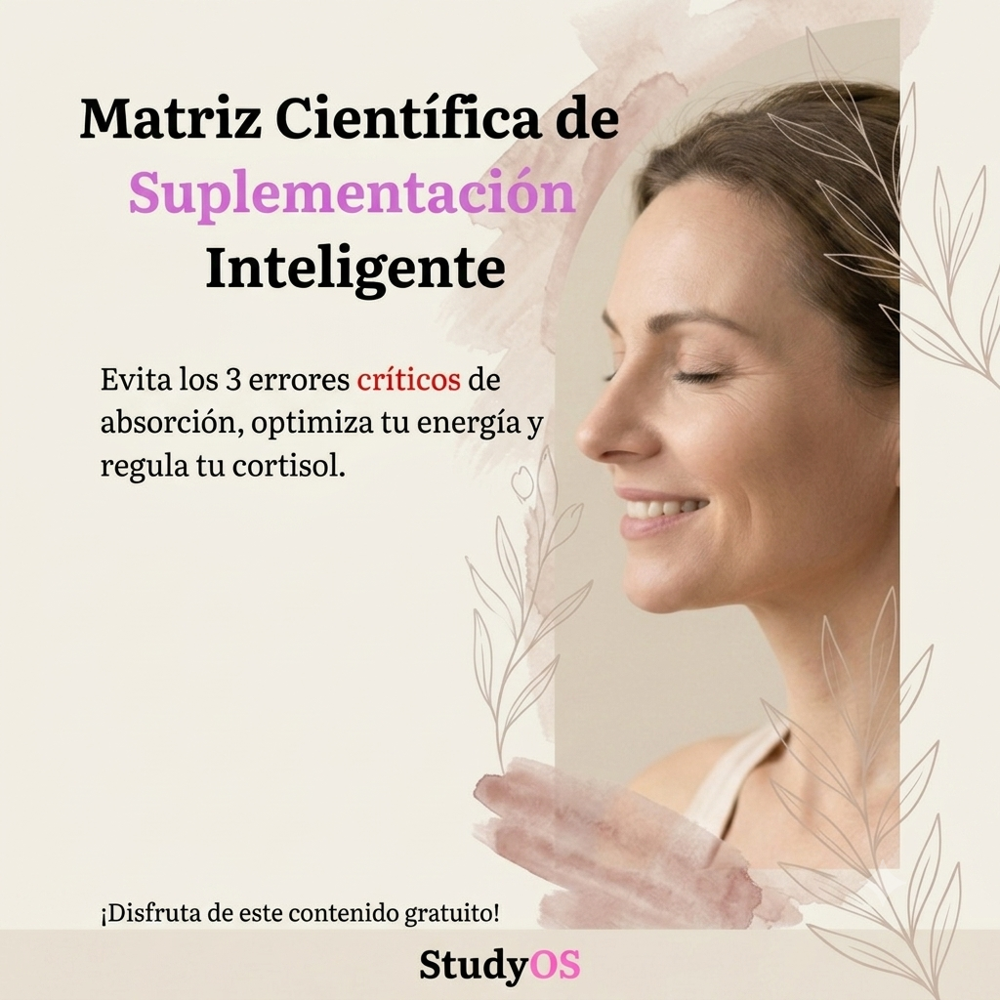
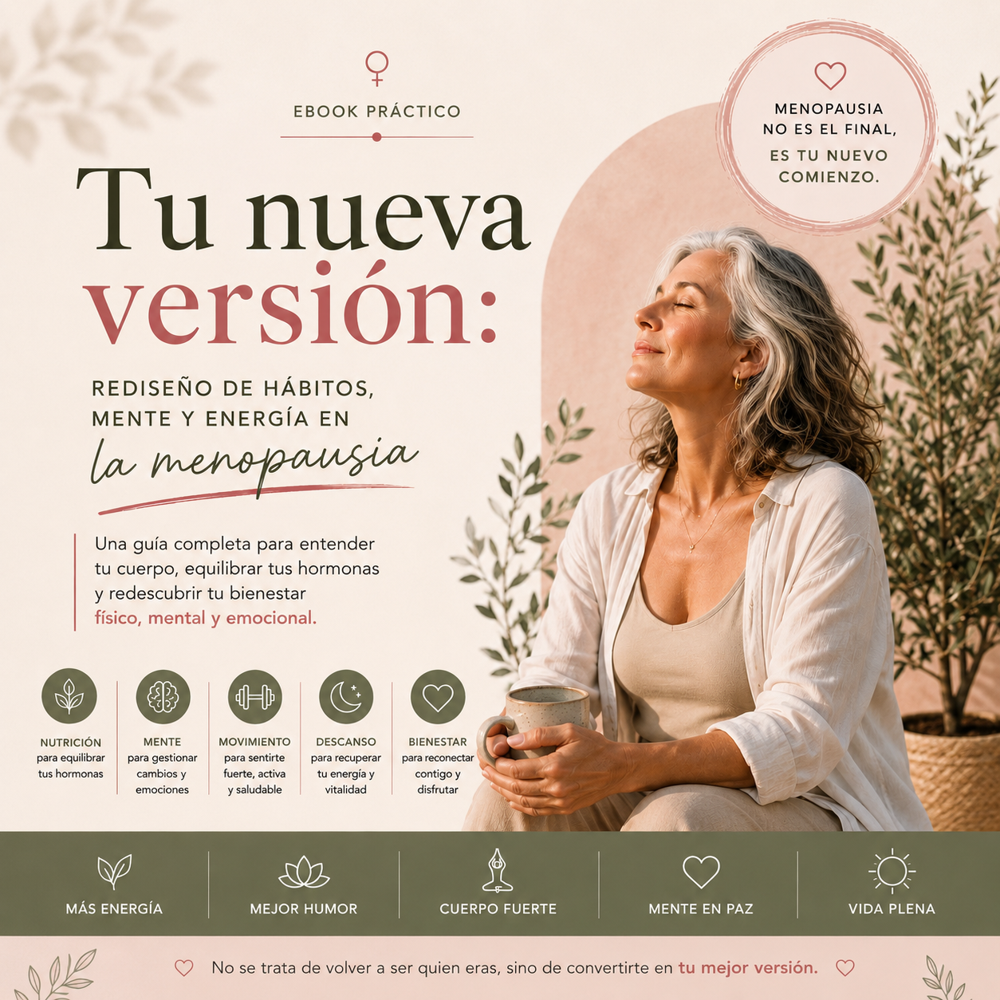
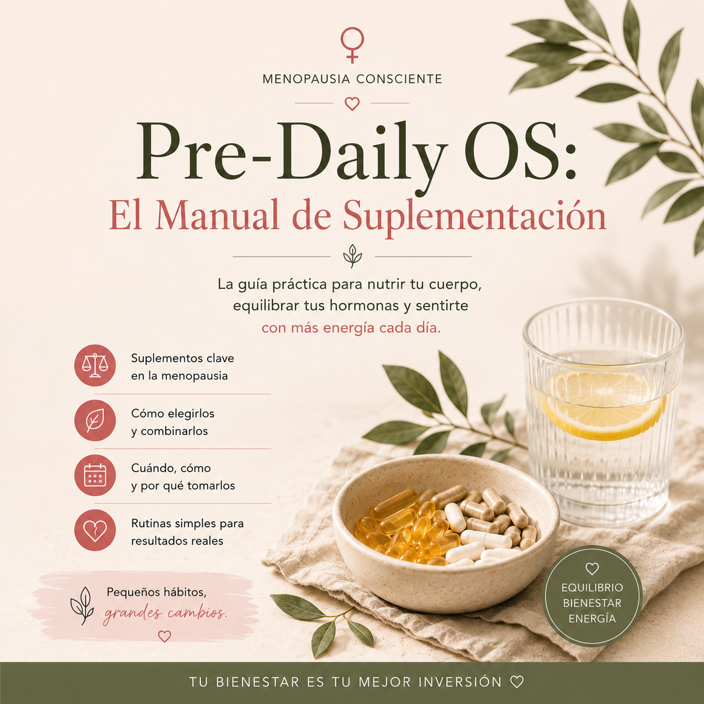
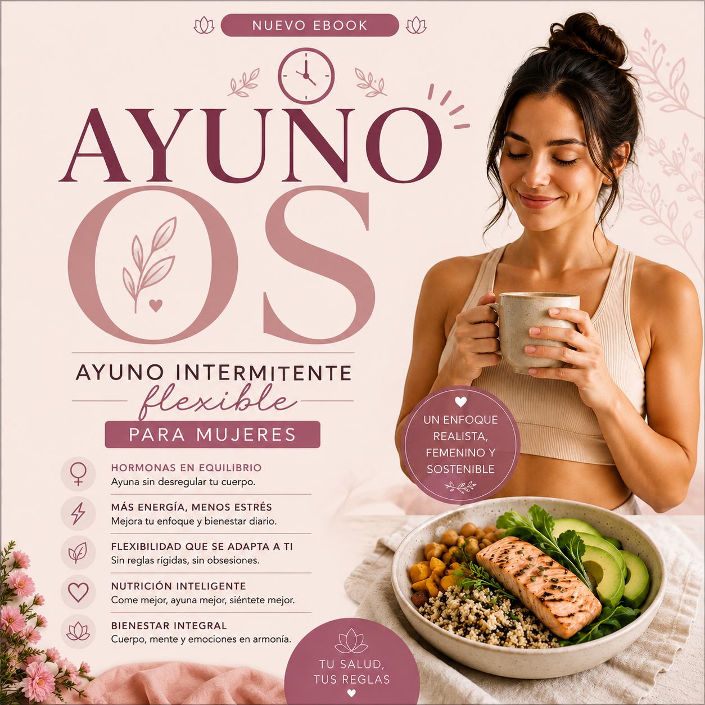

✨
1. Mentalidad & Hábitos
Rompe con las creencias limitantes y el autosabotaje. Te damos las herramientas necesarias para construir una autodisciplina inquebrantable basada en el amor propio y la claridad mental.
Creamos recursos digitales de alto valor diseñados exclusivamente para mujeres que buscan el desarrollo personal integral. Olvida las fórmulas lineales y restrictivas. Aprende a potenciar tus hábitos, tu enfoque y tu energía respetando tu naturaleza biológica y mental. Sostenible, real y alineado con tu éxito personal.
El verdadero desarrollo personal no es una meta aislada, es la sincronía de tus tres motores principales.
Rompe con las creencias limitantes y el autosabotaje. Te damos las herramientas necesarias para construir una autodisciplina inquebrantable basada en el amor propio y la claridad mental.
Tu cuerpo es cíclico, no una máquina constante. Aprender a sincronizar tu nutrición, tu descanso y tus niveles de fuerza con tu ciclo biológico te dará una ventaja injusta para rendir al máximo.
Aprende a gestionar tu tiempo sin quemarte. Herramientas diseñadas para mujeres ambiciosas que buscan compaginar sus objetivos profesionales con un bienestar emotional profundo y real.
Matriz Científica de Suplementación Inteligente
Acceso Gratuito

Evita los 3 errores críticos de absorción, optimiza tu energy y regula tu cortisol. Un mapa detallado de ingeniería biológica diseñado para estructurar tus tomas diarias con precisión clínica y potenciar tus niveles hormonales sin malgastar tu dinero.
La Realidad Molecular. El uso estratégico y clínico de micronutrientes para evitar la competencia de transportadores en tus intestinos, la absorción genérica ineficiente.
Cronograma diario de rendimiento optimizado (Mañana, Desayuno, Almuerzo, Noche), Diccionario Completo de Formas Químicas (Bisglicinatos vs Óxidos) y Análisis del Audio-Podcast complementario de regalo (22 min).
A estructurar tomas con precisión clínica, a detectar los 3 errores de etiquetado que destruyen tu dinero, a bloquear el cortisol nocturno mediante formas activas y a desvanecer la fatiga a mitad del día.
Guías prácticas en formato digital diseñadas para aplicarse desde el primer día. ¡Tu compra nos sirve para seguir creando recursos para todas!
Nutrición Según Tu Ciclo Menstrual
Guía Práctica & Plan de 90 días

Sincronización metabólica integral a través de las 4 fases biológicas del ciclo menstrual para transformar el cuerpo sin restricciones lineales absurdas.
Listas de la compra semanales, mapas de entrenamiento adaptados (fuerza, hipertrofia y movilidad), 4 recetas estrella y el Plan de Acción de 90 días.
A erradicar antojos en fase lútea usando triptófano, combatir hinchazón, optimizar fuerza cuando tus estrógenos se elevan y potenciar el descanso real.
Incluye audio completo con una duración de 27 min de análisis exclusivo.
Daily OS: Tu Nueva Versión
Hábitos, Mente y Energía en la Menopausia

La actualización integral del sistema operativo biológico femenino frente a caídas de estrógenos, progesterona y picos de cortisol suprarrenal.
El Menú de Mañanas Elásticas (Alfa, Media y Recuperación), Método de 3 Anclajes diarios de organización cognitiva y Protocolo de Higiene Térmica.
A revertir niebla mental mediante descargas cognitivas, frenar sofocos con sábanas de hilado natural y entrenar fuerza sin sobreestimular tu tiroides.
Incluye audio completo con una duración de 24 min de análisis exclusivo.
PRE-DAILY OS: Suplementación Inteligente
Hormonas, Enfoque y Ciencia en la Premenopausia

Ingeniería molecular y fitoterapia de precisión durante la ventana de vulnerabilidad neuroendocrina (caída de progesterona y picos de estrógeno).
Fichas de prescripción clínica (Vitex, KSM-66, Bisglicinato, Omega-3 con sello IFOS), análisis del estroboloma intestinal y analíticas recomendadas.
A mitigar ciclos hemorrágicos caóticos, modular receptores GABA para frenar ansiedad nocturna, metabolizar estrógenos y estabilizar fatiga suprarrenal.
Incluye audio completo con una duración de 15 min de análisis exclusivo.
Ayuno OS
Ayuno Intermitente Flexible para Mujeres

Ayuno intermitente adaptado a la biología y ciclos femeninos, alejándose de las restricciones lineales e incorporando flexibilidad metabólica de precisiónmolecular[cite: 1, 19, 50].
El Protocolo de la "Ventana Elástica", Cronograma del Ciclo Menstrual (fase folicular y lútea), El Reset de los 40 y el Protocolo de Apertura Inversa en 2 fases.
A usar el ayuno como catalizador de energía, hackear el secuestro de GLUT4, activar la autofagia profunda de forma segura y resetear tu microbiota intestinal de manera sostenible[cite: 55].
Incluye audio completo con una duración de 20 min de análisis exclusivo.
Al adquirir cualquiera de nuestras guías digitales o descargar el recurso gratuito, entrarás de forma automática en nuestra newsletter semanal de hábitos, enfoque y crecimiento integral.
Además, recibirás directamente en tu correo de Gumroad la guía exclusiva de regalo con las 6 recetas saludables y equilibradas para potenciar tu energía.